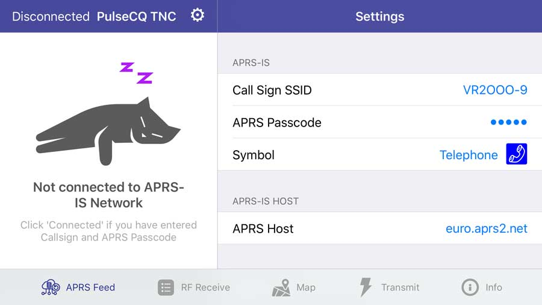
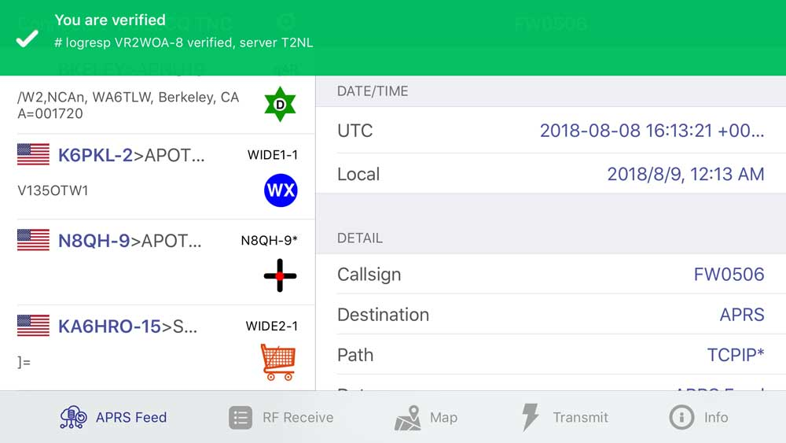

The APRS servers are commonly load-balanced with a round robin host rotate.aprs2.net.
The PulseModem A connects to the server, which you can change in settings, by TCP protocol.
Then, a filter will apply which only grabs new messages from the nearby stations, within a radius of 100km.
The APRS network is intended for licensed amateur radio holders.
That means you are required to have a valid callsign.
A callsign SSID identify your device, which is your ham radio callsign followed by a dash and then a number from 0 to 15 inclusive.
For example, suppose you have a call sign VR2OOO. You can have a callsign SSID VR2OOO-8.
You can generate an APRS passcode with your amateur radio callsign, which is a hash of it and does not change.
Once you enter the Call Sign SSID and APRS Passcode, you can view APRS messages in your area, as well as posting messaging to the APRS-IS network.
